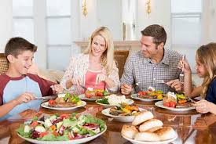

Close to the Vine
Great Tasting Healthy Family Meals To Go
 Eat well Live wellWhat are we About?
Close to The Vine creates Crazy Delicious and yes Healthy dishes for you to grab on the way home from work, sporting events or just a busy day. Leave the cooking to us! Eat well, Live Well, Spend Time with Family!
Seasonal Menu Items
Using closest to the Vine ingredients provides the allows the menu to change according to peak season fruits and vegetables. Check out this seasons scrumtiously healthy Meals